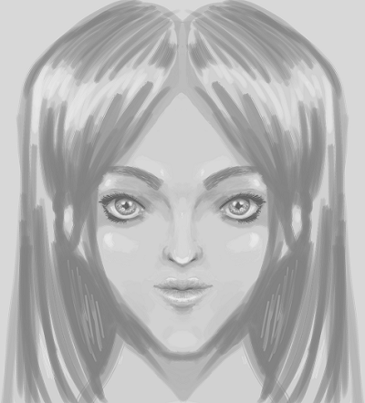
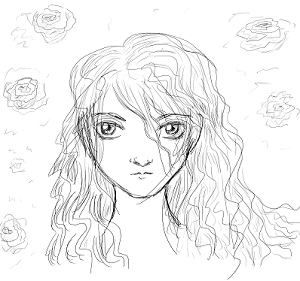

This week (early Oct '16), I tried out Krita, which is free, open-source painting and drawing software. This is dedicated painting and drawing software, rather than photo-manipulation software with some painting and drawing capability. It's designed for use with a tablet (it's pixel art, not vector art, though there's a kickstarter to improve the vector functionality). I have a little experience of tools like this, but not lots (aside from my beloved MS Paint, I've dabbled with Artweaver, Photoshop CS2 and GIMP). I haven't painted with layers since high school. Here's how I got on!
Krita installed fine on Windows 7, and took about 10 seconds to start up the first time. I did experience lag (which was a 'noooooooo!' moment), but a Google around and it was easy to fix. I had to turn off OpenGL (in a checkbox at the top, after navigating to settings > configure Krita > Display). This was on by default; luckily it was the first thing I tried as I've had problems with OpenGL settings slowing down emulators in the past. This does make zooming slow and jerky; the best workaround I've found is to wiggle the cursor around to update the page after zooming. To the right is my test doodle, where I tried out a bunch of brushes and things.
I was excited; the UI was lovely and tools were easy to find. It was quick to get started, the keyboard shortcuts were guessable, and I didn't once click a menu or zoom accidentally when trying to paint a line (I find this happens far too often when using complex drawing software).
After playing around a bit, I had a look for tutorials. This one looked ace, so I started there on my next lunchbreak.
It's fair to say my first attempt... was an absolute disaster.
Here's a lower layer; you can see how shaky it is. Not good!
I'd set out to use a similar process to do a different type of picture, but the styles didn't mesh well. I didn't shade subtly enough, and I had some very shaky brush strokes, partly because I'd used a low-opacity brush in the wrong place by accident, and then tried to fix it. I think my mental state also played a big role; I was tired and miserable the day I tried this.
So, for my next attempt later in the week, I tried making something closer to the style of the original, and took more care over shading and using firm brush strokes. This took much longer than the first attempt, at around 5 hours, for the 'finished' thing (as you can see, it's not really finished; I was just sick of it by that point and wanted to play the guitar):

Yeah, this is the point where I itch for traditional media. In pencil,
I could smudge this with my hand for about 10 seconds and blend all this
shading so it looked less clumsy. I haven't worked out how to use
digital smudging tools effectively yet, so I just leave it.
This also makes me loath to use darker shadows, which in turn leads
to rather flat-looking images.
Overall, I'm thrilled with how easy it was to make this, and can't wait to try out some more brushes and things. For someone who serious problems with skew, and has to flip images constantly, the horizontal mirror tool is fantastic. It's also comforting to realise that other people use it, and I'm not uniquely bad at drawing symmetrically.
I haven't gone into much detail about *how* I made these, as I just followed the steps in the tutorial linked. The tutorial itself assumes a general knowledge of proportions and planes of the face; it's a guide to using Krita rather than a guide to drawing itself. That said, you could probably learn a lot about those things by closely observing and copying the tutorial image. I didn't use a reference image, but I've spent a ridiculous amount of time drawing facial features over the years, so the rules for generic eyes, noses and mouths are burned into my brain.
I use an Intuos Pro Medium that I bought a couple of years ago. It's been perfect and I feel I'm only limited by my own ability (oh, and wacom have *beautiful* packaging; the stylus is even stored in a faux inkwell, the shape of which cannot be described, only experienced). They apparently have good Linux support, though I haven't tested this much. Before my Intuos, I had this, which is completely different and didn't suit me.
I've now had a quick go at colouring. I don't know how to colour, so I did the first few steps from the followup tutorial: . I didn't spend much time on it and stopped at step 4. Here are the experiments so far:
I wanted to give her dark skin and blue hair, but my base shade was too light, so brown wasn't possible; When I tried, I could only get red, orange, grey or green. I guess I'd need to make the picture darker first, then colour.
Over the winter holidays, I tested Krita as a paper sketchbook replacement, for sketching figures (5-10 mins per figure). I wanted some images for reference, so I wandered over to the online version of Vogue, clicked the first link I saw and went from there. It took a bit of fiddling to get a setup where my screen was effectively split so I could see the full reference image and the full canvas simultaneously, but I got there in the end ('canvas only' didn't work in splitscreen, so I manually hid all the dockers). I used the ink_ballpen preset brush.
With the tablet, it still takes me a long time to draw a line in the place I want it, so it doesn't yet *feel* like a pen and paper, but the end-results look pretty penlike.

10 min doodle from imagination with the same pen tool